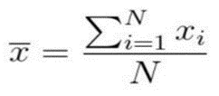
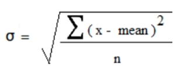
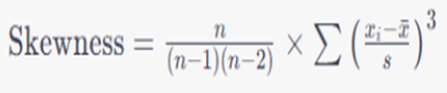
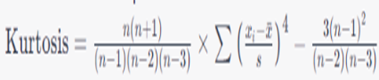
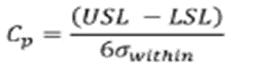
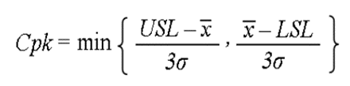
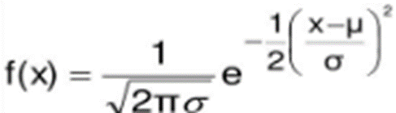

SPC stats
1. Arithemetic Mean
The arithmetic mean, often referred to as the average, is a measure of central tendency that is calculated by adding up all the numbers in a data set and then dividing by the number of observations.

Here x' = Arithmetic mean
xi = Individual value in the data set
N = Total number of values in the data set
2. Standard deviation
In statistics, the standard deviation is a measure of the amount of variation of the values of a variable about its mean.

Here x = Arithmetic mean
n = Total number of values in the data set
σ = Standard Deviation
3. Range
A range refers to the difference between the highest and lowest values in a dataset.
-
Minimum value = Smallest value in the Data set.
-
Maximum value = Largest value in the Data set.
4. Skewness
Skewness is a measure of symmetry in a distribution.

Here n = Total number of values in the data set
xi = Individual value in the data set
x' = Arithmetic mean
S = Standard deviation
If Skewness = 0 it indicates that the distribution of the data is perfectly symmetrical.
If Skewness > 0 it indicates that the distribution of the data is positively skewed, also known as right-skewed.
If Skewness < 0 it indicates that the distribution of the data is negatively skewed also known as left skewed.
5. Kurtosis
Kurtosis is the degree of peakedness of a distribution, usually taken relative to a normal distribution.

Here n = Total number of values in the data set
xi = individual value in the data set
x' = Arithmetic mean
S = Standard deviation
There are 3 cases for kurtosis:
-
When kurtosis is greater than 3, the distribution is called Leptokurtic. It has a sharper peak and fatter tails compared to a normal distribution, indicating a higher likelihood of extreme values.
-
When kurtosis is equal to 3, the distribution is called Mesokurtic. It has the same peak and tail behaviour as a normal distribution, meaning it has a moderate number of extreme values.
-
When kurtosis is lesser than 3, the distribution is called Platykurtic. It has a flatter peak and thinner tails compared to a normal distribution, indicating fewer extreme values.
6. Tolerance band
A tolerance band is a range or interval within which a certain measurement, parameter, or value is allowed to vary without leading to a significant deviation from the desired or acceptable performance.
7. Potential Capability (Cp)
Cp is the ratio of the tolerance range (the difference between the upper and lower specification limits) to the process spread, which is typically measured as six standard deviations of the process.

Here
(USL) Upper Specification limit = mean + 3(Standard deviation)
(LSL) Lower Specification Limit = mean -- 3(standard deviation)
σ = Standard deviation
8. Potential Capability (Cp)
Process capability is a statistical measure of a process's ability to produce output that meets specified limits or tolerances.

Here
(USL) Upper Specification limit = mean + 3(Standard deviation)
(LSL) Lower Specification Limit = mean - 3(standard deviation)
σ = Standard deviation
x' = Arithmetic mean
9. Rejected parts
The values fall outside the range of tolerance band, so they would be considered out of specification.
Rejected parts = (x<lower tolerance) or (x> upper tolerance)
Here x = individual value in the data set
10. % of Total Reject
The percentage of total rejects represents the ratio of rejected (defective) units to the total number of units produced, expressed as a percentage.
% of Total Reject = (X / total parts) *100
Here X = Total number of Rejected parts
11. Deviation over tolerance
The values which lies above the tolerance or upper tolerance is called Deviation over tolerance.
Deviation over tolerance = USL − Value
12. Deviation under tolerance
The values which lies under the tolerance or lower tolerance is called Deviation under tolerance.
Deviation under tolerance = LSL − Value
13. % of USL Deviation
The percentage of USL (Upper Specification Limit) deviation is used to quantify how much a particular value deviates from a defined upper limit of acceptable values. This can be useful in quality control and process capability analysis.
`% of USL Deviation = ((Number of Values Above USL)/ (total number of values)) * 100`
13. % of LSL Deviation
The percentage of Lower Specification Limit (LSL) deviation quantifies how much a particular observed value deviates from the defined lower limit of acceptable values (LSL) in a process. This is useful in quality control and process capability analysis.
% of LSL Deviation = ((Number of Values Below LSL)/ (total number of values)) * 100
14. Estimated % out of Tolerance
defined as
((Number of out of tolerance values)/ (total number of values)) *100
15. Estimated % over Tolerance
defined as
((Number of over tolerance values)/ (total number of values)) *100
17. Estimated % under Tolerance
defined as
((Number of Under tolerance values)/ (total number of values)) *100
18. Normal Distribution Curve

In order to plot Normal Distribution Curve for X and f(X) the formula is Firstly, enter the given data in the Ascending order and find the f(x) for each data corresponding to it and then finally plot the normal distribution curve.
Here x = Individual value in the data
μ = Arithmetic mean
σ = Standard Deviation